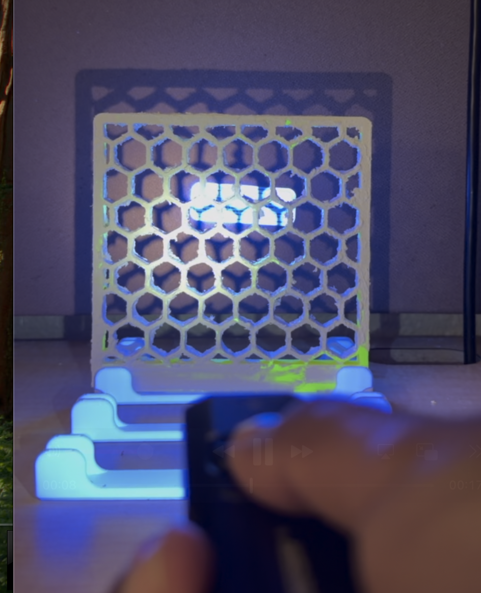
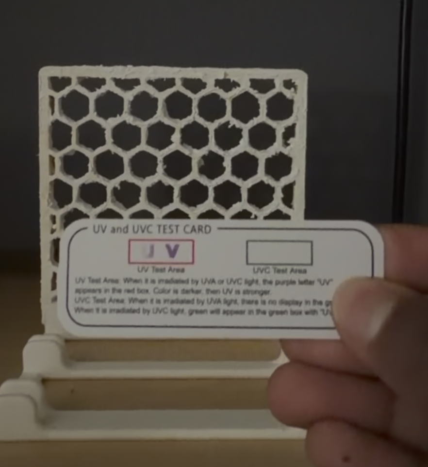
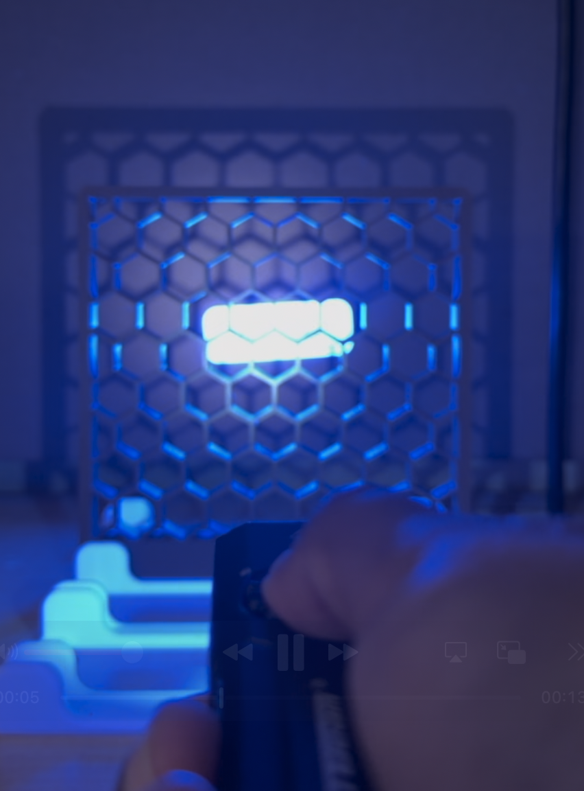
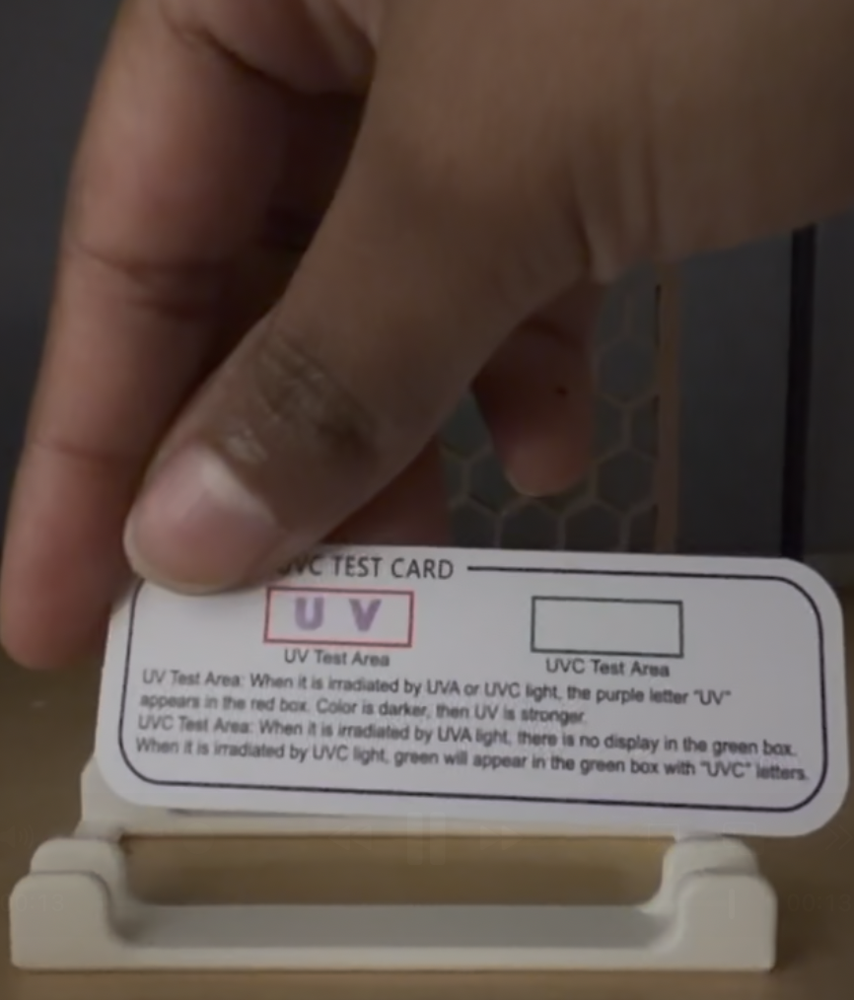
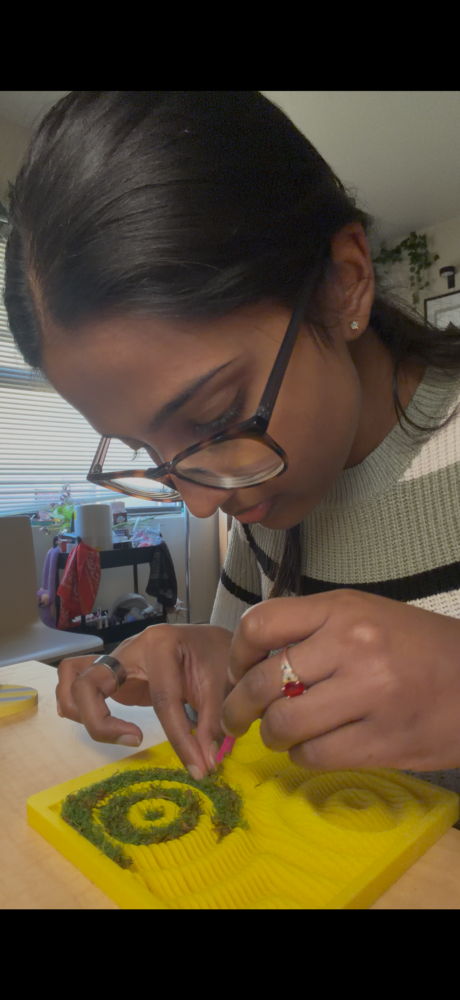

Built and tested.
Photocatalytic activation confirmed.
Two physical prototypes: a 3D-printed PLA structure with Titanium Dioxide paste and one without. The honeycomb section was then tested with a UV-A torch and photosensitive test strips to verify UV absorption with the TiO₂-coated surface.
UV-A passes through.
TiO₂ activates.
A UV-A torch was shone through the 3D-printed honeycomb to verify that the Titanium Dioxide does absorb UV and the geometry allows sufficient UV-A light to reach the TiO₂ coating behind it. The test compared a TiO₂-coated panel against an uncoated. The coated strip showed a lighter reading. Because TiO₂ requires UV-A activation to initiate photocatalytic reactions, confirming UV absorption was a critical proof-of-concept step.

UV-A torch through TiO2 coated honeycomb

Light UV-A test strip - Confirming TiO2 absorbs UV

UV-A torch through TiO2 uncoated honeycomb

Dark UV-A test strip - Confirming without TiO2, less/no absorption of UV


